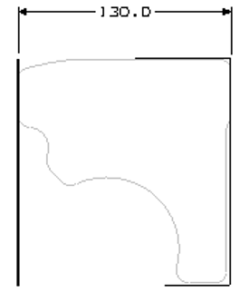
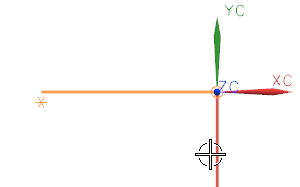
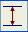
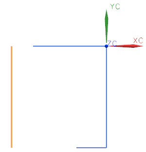
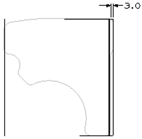
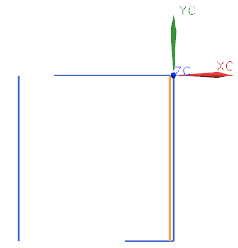

对于下一条曲线，您将创建这个轮廓位于左侧的竖直直线，这条线定义了轮廓的左侧边，必须放置在离右侧边指定距离的位置。

当选择球的中心在直线左侧时(小心别选择控制点)，选择竖直直线。

在跟踪条上的偏置输入框  中，键入130并回车。
当焦点是在 XC、YC 或 ZC 输入框中时回车，那么您是在指定一个位置，如果焦点是在其它任何输入框中，那么您是在指定一个参数值。而不是一个位置。
将窗口大小调整至合适。

在您创建定义右侧转弯的小圆弧之前，您要创建用于定义轮廓右下侧的竖直线。

当光标选择球位于直线左侧时，选择原始的竖直线(不是控制点)。
在跟踪条的偏置输入框 中，键入3并回车。

关闭所有部件。